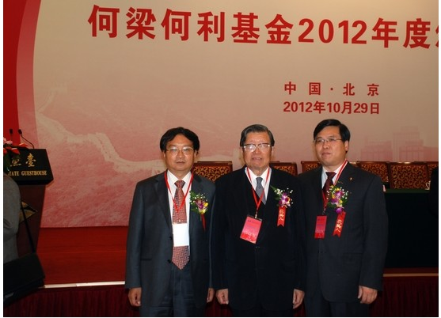

中国农科院专家获何梁何利基金奖
10月29日，何梁何利基金2012年度颁奖大会在北京钓鱼台国宾馆举行。中共中央政治局委员、国务委员刘延东，全国人大常委会副委员长路甬祥，全国政协副主席、科技部部长万钢等出席大会并为获奖者颁奖。中国农业科学院有3位专家获奖，其中原院长王连铮研究员和作物科学研究所所长万建民研究员获何梁何利基金科学与技术进步奖，棉花研究所副所长李付广研究员获何梁何利基金科学与技术创新奖。

中国农业科学院三位获奖人合影（由左至右分别为万建民、王连铮、李付广）
王连铮研究员是我国着名的大豆遗传育种学家，长期从事大豆品种的选育及育种方法研究，主持选育大豆品种33个，在广适和高产育种方面取得突破。他创新大豆育种理论，提出了在育种上降低大豆株高的途径，利用有限结荚习性与无限结荚品种杂交、有限结荚品种间杂交、辐射育种以及地方品种筛选矮秆材料，改进了广适应大豆品种的育种方法；重视理论联系实践，加速科技成果转化取得了显着成绩，累计推广大豆新品种1.4亿亩。
万建民研究员长期从事水稻产量、品质及抗性分子遗传与育种研究。在国内较早提出和实践了作物分子设计育种理论，推动了中国作物分子育种的发展；发现了水稻光钝感、株型调控及广亲和基因，促进了籼粳杂种优势的利用；挖掘水稻品质优异基因，培育优质粳稻新品种，推进了南方粳稻区稻米的品质改良；利用分子聚合育种与规模化抗性鉴定相结合的技术体系，选育抗条纹叶枯病高产优质粳稻新品种，有效解决了南方粳稻区受条纹叶枯病流行危害的难题。
李付广研究员主要从事棉花组织培养、种质创新和分子育种研究。发明了棉花组织培养分化性状的纯化方法，大幅度提高了遗传转化效率，使棉花成为可进行大规模基因功能验证的目标作物，为国内24个实验室转化验证候选基因156个，促进了基础研究成果在棉花上的应用，建立了棉花规模化转基因技术体系，创制抗虫种质1479份，上交国家中长期库性状稳定材料865份，与育种家合作培育不同类型抗虫棉新品种32个，累计推广面积1亿亩。
据了解，何梁何利基金是目前国内规模最大的民间科技奖励基金，奖励和资助致力于推进中国科学技术取得成就及进步与创新的个人。该基金每年评选1次，现设有“科学与技术成就奖”、“科学与技术进步奖”和“科学与技术创新奖”3个奖项。2012年度共有50位优秀科学家获奖，其中“科学与技术进步奖”35名，“科学与技术创新奖”15名。
(文章来源：中国农业科学院网站，作者：孙君明)